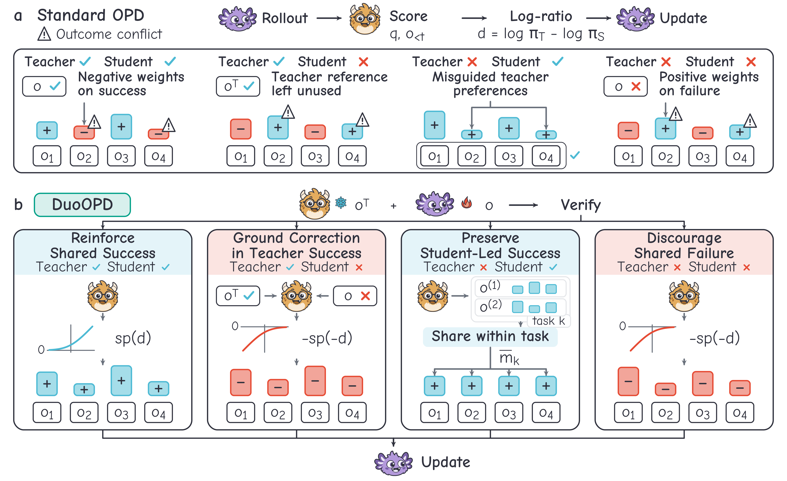
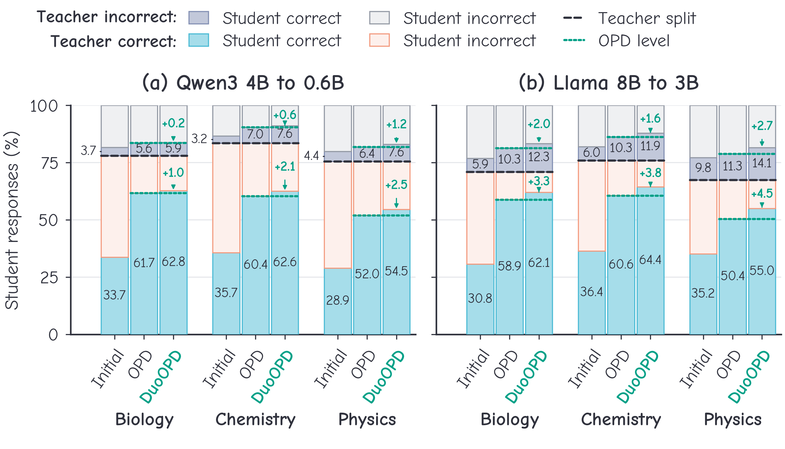

DuoOPD: Learning from
Joint Teacher–Student Outcomes
for Multi-Task On-Policy Distillation
1 University of Science and Technology of China2 The Hong Kong Polytechnic University
3 The University of Hong Kong4 Southeast University
† Corresponding author · yuao@mail.ustc.edu.cn
Abstract
On-policy distillation (OPD) trains a student on its own responses with token-level feedback from a stronger teacher, yet the teacher can fail on questions the student already answers correctly, and how often each model succeeds varies across tasks. OPD ignores these outcomes and, on average, pushes down even the student's correct responses; gating feedback by student correctness fixes the direction but uses the teacher in the same way whether or not it succeeded. We introduce DuoOPD, in which the student's outcome sets the direction of feedback and the joint teacher–student outcome decides how the teacher supports it: when only the teacher succeeds, its verified answer becomes context for scoring the student's failed response, and when only the student succeeds, a weight shared within the task reinforces the whole response. A single rule covers all four outcome combinations without task-specific settings. Across Qwen3 and Llama, DuoOPD outperforms all five baselines in mean macro accuracy, improving over OPD by 2.58 and 5.98 percentage points, and it also leads on two further task mixtures spanning scientific calculation, instruction following, and code generation. Ablations show that outcome-based direction alone stays near the gated baseline, while the joint-outcome designs supply most of the gain.
Method
In on-policy distillation, the student generates an answer and the teacher scores its tokens. The teacher's preferences may still favor an incorrect response or give little support to a correct one. DuoOPD uses verified outcomes to decide whether each student response should be reinforced or suppressed.
When the teacher answers correctly and the student does not, the teacher receives its own verified answer as extra context while scoring the student's response. This helps direct correction along the student's existing answer. The student never sees the reference. When only the student is correct, DuoOPD reinforces its whole response with a positive weight shared among such successes within the same task and rollout batch.
When both models are correct, every student token receives positive feedback; when both are wrong, every token receives negative feedback. In these two cases, teacher preferences determine the strength of the feedback. The same four-outcome rule applies across tasks, with the teacher frozen throughout training.

Results
Test accuracy (%) is measured by avg@8: mean success across eight sampled answers per question. Trained methods are evaluated after update 60 and averaged over three training runs. Macro gives equal weight to the three tasks in each setting.
Bold and underlined values mark the best and second-best distillation methods in each column. Initial students and teachers are included as references.
| Method | Qwen34B → 0.6B | Llama3.1-8B-Instruct → 3.2-3B-Instruct | ||||||
|---|---|---|---|---|---|---|---|---|
| Biology | Chemistry | Physics | Macro | Biology | Chemistry | Physics | Macro | |
| Student (initial) | 37.38 | 38.88 | 33.38 | 36.54 | 36.63 | 42.44 | 44.94 | 41.33 |
| Teacher | 79.56 | 81.38 | 76.88 | 79.27 | 73.25 | 75.06 | 69.88 | 72.73 |
| OPD | 67.38 | 67.42 | 58.38 | 64.39 | 69.19 | 70.90 | 61.75 | 67.28 |
| EOPD | 68.06 | 68.44 | 60.92 | 65.81 | 68.73 | 69.54 | 61.21 | 66.49 |
| OPDVR | 66.92 | 66.69 | 60.90 | 64.83 | 69.75 | 72.40 | 63.90 | 68.68 |
| ExOPD | 67.54 | 66.79 | 58.94 | 64.42 | 68.33 | 69.88 | 60.81 | 66.34 |
| FiRe-OPD | 67.00 | 67.23 | 59.50 | 64.58 | 69.50 | 71.81 | 61.60 | 67.64 |
| DuoOPD (ours) | 68.60 | 70.19 | 62.10 | 66.97 | 74.42 | 76.33 | 69.02 | 73.26 |
DuoOPD improves over OPD in biology, chemistry, and physics for both model families. The largest gains are in physics: 3.73 percentage points for Qwen3 and 7.27 for Llama. Averaged across the three tasks, the gains are 2.58 and 5.98 points, respectively.
| Method | ScienceKnowledge, understanding, calculation | HeterogeneousAnswers, instructions, code | ||||||
|---|---|---|---|---|---|---|---|---|
| Materials knowledge | Chemistry understanding | Physics calculation | Macro | Physics knowledge | IFEval | MBPP | Macro | |
| Student (initial) | 32.63 | 56.44 | 24.38 | 37.81 | 32.25 | 54.99 | 20.69 | 35.98 |
| Teacher | 67.44 | 96.94 | 56.00 | 73.46 | 77.25 | 78.70 | 57.69 | 71.21 |
| OPD | 55.50 | 91.71 | 39.77 | 62.33 | 59.29 | 50.95 | 31.41 | 47.22 |
| EOPD | 55.00 | 92.75 | 36.94 | 61.56 | 59.56 | 50.25 | 30.88 | 46.90 |
| OPDVR | 53.98 | 92.83 | 39.67 | 62.16 | 59.35 | 52.31 | 31.83 | 47.83 |
| ExOPD | 54.56 | 93.21 | 40.08 | 62.62 | 59.81 | 49.72 | 30.95 | 46.83 |
| FiRe-OPD | 54.67 | 92.17 | 38.31 | 61.72 | 58.96 | 52.89 | 30.74 | 47.53 |
| DuoOPD (ours) | 54.65 | 92.46 | 43.33 | 63.48 | 61.75 | 53.30 | 32.69 | 49.24 |
DuoOPD also leads the five baselines in mean Macro on two additional task mixtures. The science mixture combines factual knowledge, understanding, and numerical calculation; the heterogeneous mixture combines physics answers, instruction following, and executable code. It leads the baselines on physics calculation in the science mixture and on all three tasks in the heterogeneous mixture.
IFEval uses prompt-level strict accuracy: a response must satisfy every instruction constraint. MBPP evaluates generated code. Values follow Tables 1 and 2 of the paper.

BibTeX
@article{yu2026duoopd,
title={DuoOPD: Learning from Joint Teacher-Student Outcomes
for Multi-Task On-Policy Distillation},
author={Yu, Ao and Gao, Weibo and Zhou, Heng and Yue, Linan
and Li, Rui and Liu, Suyi and Yan, Yu
and Zhang, Yizhong and Liu, Qi},
journal={arXiv preprint arXiv:2609.33711},
year={2026}
}